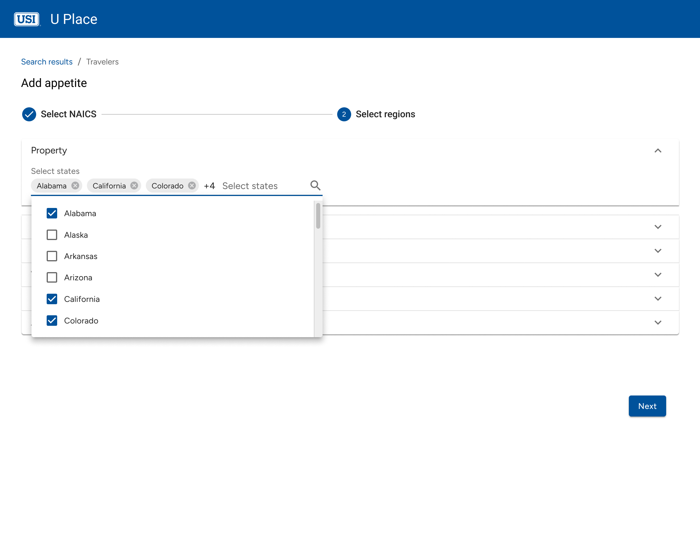
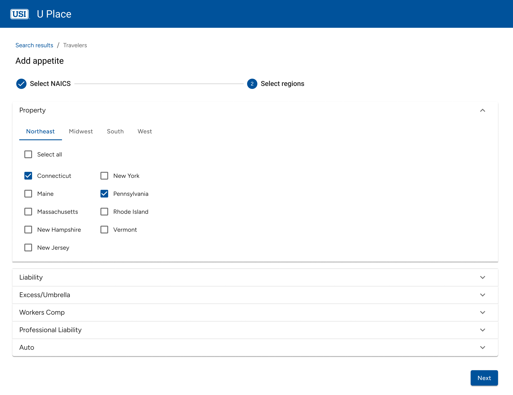
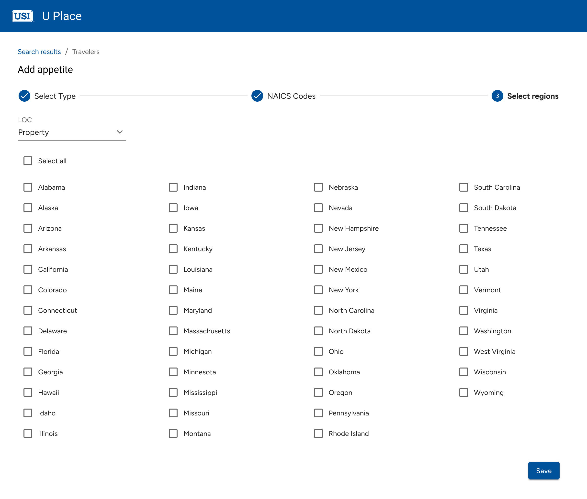
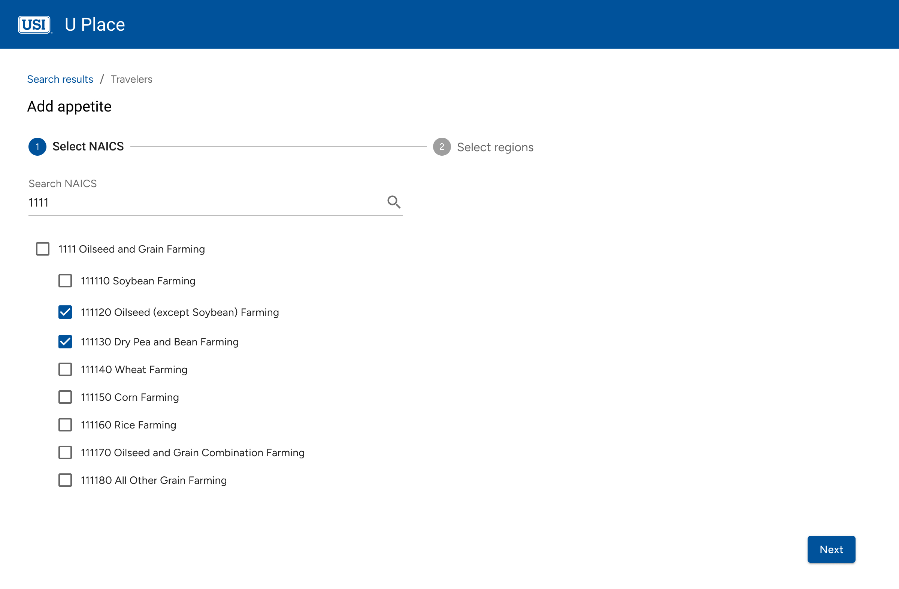
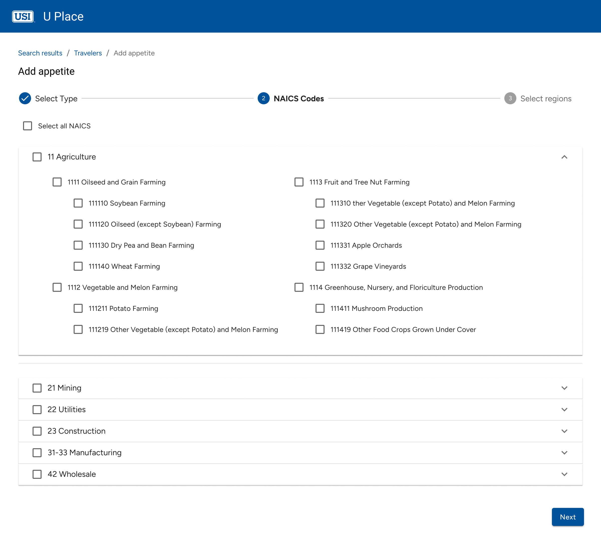
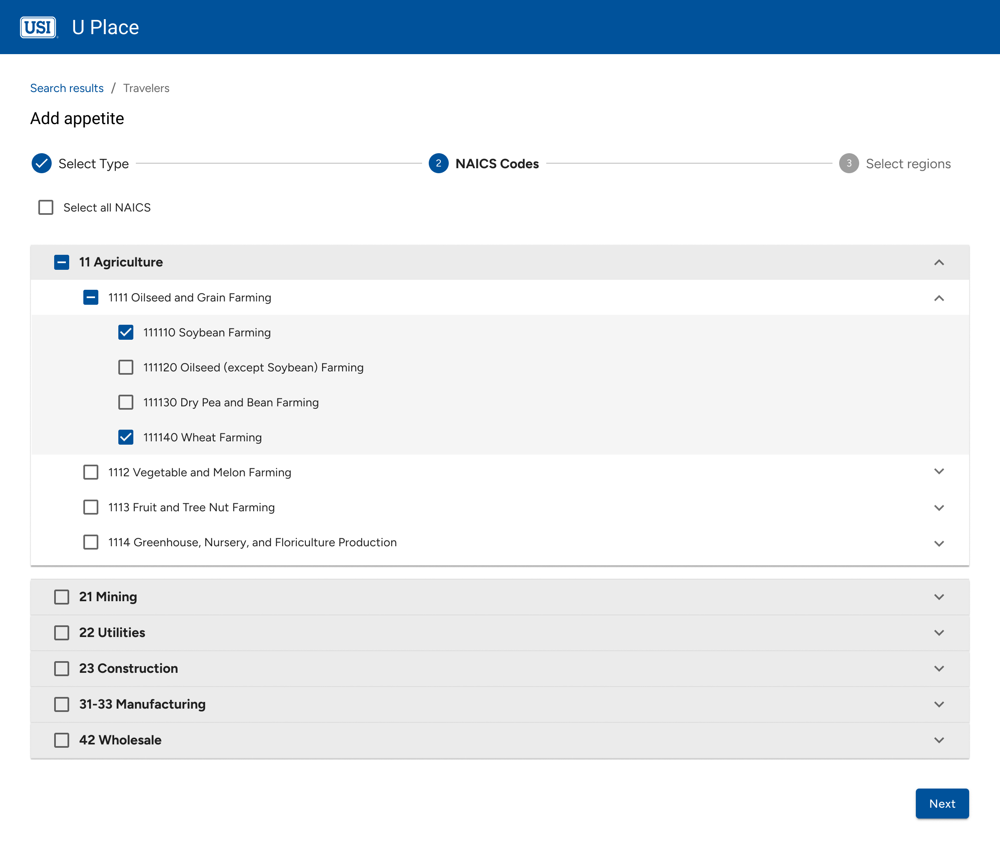

Overview
In UPlace, carrier recommendations are algorithm-driven, ranking insurers based on various factors. However, the business needed a way to manually override these rankings based on strategic priorities.
Coach’s Pick is an administrative tool that allows select users to artificially adjust a carrier’s appetite—either promoting it to the top or removing it from the list—based on business preferences.
Problem
The business needed a new platform that allowed manual adjustments to promote key partnerships by prioritizing preferred carriers and exclude carriers that weren’t a fit for certain industries or regions. However, there was no existing way to modify rankings, leading to a lack of control over recommendations and an inability to align carrier selection with business strategy.
Solution
I created a step-by-step workflow to streamline the process. The final design provided full control, improved efficiency, and aligned with business needs.

Understanding User Needs: Research & Insights
User Research
To design an effective override system for carrier recommendations, I conducted stakeholder interviews with underwriters, business analysts, and decision-makers to understand:
- How underwriters currently adjust carrier recommendations
- Challenges with manual overrides in a data-driven system
- Decision-making behaviors when selecting carriers
- How business priorities influence carrier visibility
Key Findings
🔹 Inefficient Workarounds
Underwriters lacked a direct way to modify rankings, relying on engineering tickets or external lists—slowing decision-making.
🔹 Conflicting Business Needs
Leadership pushed for preferred carriers, while underwriters prioritized industry fit and claims performance, creating misalignment.
🔹 Data + Strategic Judgment
While algorithmic rankings were trusted, real-world factors like coverage gaps and regional considerations often influenced decisions.
🔹 Need for Transparency
Any manual adjustment system required visibility to balance business needs without introducing bias or disrupting trust in data integrity.
Ideation & Design Exploration
Early Wireframes & Design Exploration
Based on initial research, I developed two mid-fidelity concepts to explore different approaches for adjusting carrier rankings. Sliders were initially chosen to provide quick, incremental adjustments without requiring manual data entry, allowing underwriters to fine-tune visibility across multiple dimensions:
- Region – Adjusting visibility based on geographic relevance.
- Industry Vertical – Prioritizing carriers for specific business sectors.
- Line of Coverage – Ensuring certain policy types had the right carrier emphasis.

Users adjust carrier rankings through always-visible sliders—no extra clicks required.
Users manage overrides within collapsible sections, reducing visual noise.
Key Insights from Stakeholders
- Simplicity over fine-tuning – Sliders were unnecessary; users only needed to promote or exclude carriers.
- Granular selection was key – Industry-wide selections were too broad; NAICS code-level control was necessary.
- State-based adjustments > Regional groupings – Users preferred state-level control to fine-tune recommendations.
This feedback led to shifting away from granular sliders toward a step-by-step selection process, prioritizing speed, clarity, and precise overrides while integrating seamlessly into existing workflows.
Refining the User Flow
Visualizing the Selection Process
After aligning on the key requirements, I mapped out a user flow to visualize how underwriters would navigate through carrier selections and adjustments. In a stakeholder meeting, I walked through this flow to validate the logic and ensure it aligned with real-world user behaviors. With this feedback, I refined the designs to better fit the decision-making process before moving to high-fidelity prototypes.
With a structured workflow in place, I focused on two critical selection processes:
- NAICS Code Selection – Ensuring precise industry-based adjustments by allowing overrides at the NAICS code level rather than broad industry groups.
- State Selection – Replacing regional selections with state-level control, giving underwriters more flexibility to fine-tune carrier visibility.
Iteration & Refinement
States Selection
Through iterative testing, I refined the state selection process to balance efficiency, control, and discoverability.
Iteration 1: Multi-Select Dropdown
💡 Design Rationale: Users could search and select states manually via a dropdown.
🚫 What Happened? While useful for finding specific states, bulk selection was tedious—users had to select states one by one, creating unnecessary friction.
Iteration 2: Region-Based Selection
💡 Design Rationale: To improve scanability, I grouped states into regions, aiming to help users find relevant states faster without excessive scrolling.
🚫 What Happened? Readability improved, but new friction emerged—switching tabs disrupted selection across multiple regions, adding extra clicks, while limited visibility made comparisons more difficult.
Iteration 3: Bulk Selection with Granular Control
💡 Final Solution: Instead of region-based selection, I displayed all states upfront with a bulk select option while preserving manual fine-tuning.
Why It Works
- Most users started by selecting all states and then fine-tuned by deselecting a few.
- Bulk selection reduced cognitive effort compared to the dropdown approach.
- Eliminating tabs and dropdowns accelerated selection speed, aligning with how users naturally worked.
NAICS Code Selection
The NAICS selection process followed a similar iteration path, evolving to support bulk selection while reducing cognitive overload.
Iteration 1: Search-Based Filtering
💡 Design Rationale: A search-based multi-select dropdown allowed users to filter NAICS codes manually.
🚫 What Happened? Users struggled with bulk selection, needing to know exact search terms, which slowed them down.
Iteration 2: Flat List with Bulk Selection
💡 Design Rationale: To improve visibility, I displayed all NAICS codes upfront in a flat list, reducing reliance on search.
🚫 What Happened? Speed improved, but without hierarchy, scanning became difficult—users struggled to differentiate between sections.
Iteration 3: Progressive Accordion with Visual Hierarchy
💡 Final Solution: Introduced collapsible categories for a structured, scalable selection experience.
Why It Works
- Users preferred scanning over searching, reinforcing the need for a structured layout.
- Collapsible sections reduced cognitive load, preventing information overload.
- Bulk selection was faster yet still flexible, allowing quick high-level selections with precision adjustments when needed.
Final Solution
Hi Fidelity Designs
The final high-fidelity designs reflect a balance between usability, flexibility, and speed, allowing users to seamlessly configure appetite preferences with minimal friction.
Impact & Outcome
Driving Efficiency & Strategic Control
By streamlining the selection process, underwriters gained more control over carrier preferences while reducing inefficiencies. Within weeks, measurable improvements emerged, demonstrating the tool’s impact on workflow efficiency.
📉 40% Fewer Support Requests
Before Coach’s Pick, underwriting teams had to request backend changes to carrier preferences, leading to delays and extra workload for support teams. Support ticket data from the first three months post-launch showed a 40% decrease in ranking adjustment requests.
🚀 85% Adoption in 6 Weeks
Usability testing and stakeholder feedback revealed that underwriters quickly adapted to the new workflow. Within six weeks, 85% of underwriters had successfully configured at least one carrier preference, based on internal usage analytics.